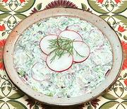

|
Radish Salad with Sour CreamLithuania - Ridikeliu Salotos su Grietine | ||||
| Serves: Effort: Sched: DoAhead: |
4 salad * 45 min Yes |
A very simple salad, fresh, and lightly tart, an excellent foil to heavier dishes. It can be made well ahead if the Radishes are salted and well drained. | |||
|
12 1 2 2 1/4 |
oz t med T c |
Red Radishes Salt Scallion Dill, fresh Sour Cream |
Make - (45 min - 13 min work)
|